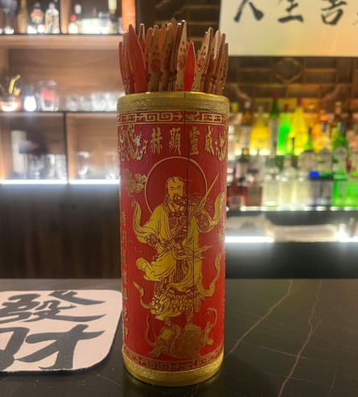
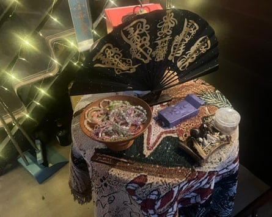

I n the age of self-help, self-improvement and self-obsession, there have never been more places to look to for guidance. Where the anxious and the uncertain might have once consulted a search engine for answers, now we can engage in a seemingly meaningful discussion about our problems with ChatGPT . Or, if you’re in China, DeepSeek .
To some, though, it feels as if our ancestors knew more about life than we do. Or at least, they knew how to look for them. And so it is that scores of young Chinese are turning to ancient forms of divination to find out what the future holds. In the past couple of years, fortune-telling bars have been popping up in China’s cities, offering drinks and snacks alongside xuanxue , or spiritualism. The trend makes sense: China’s economy is struggling , and although consumers are saving their pennies, going out for a drink is cheaper than other forms of retail therapy or an actual therapist . With a deep-rooted culture of mysticism that blends Daoist, Buddhist and folk practices, which have defied decades of the government trying to stamp out superstitious beliefs, for many Chinese people, turning to the unseen makes perfect sense.
Fortune telling sticks, orqiuqian, in a Beijing bar.Photograph: Amy Hawkins/The Guardian
This week, I decided to join them.
My xuanxue haunt of choice is Qie Le, a newly opened bar in Beijing’s wealthy Chaoyang district. On a Thursday evening, the bar, adorned with yellow Taoist talismans and draped translucent curtains, is quiet. All the better for hogging the fortune-teller’s attention with questions from my deep wells of narcissism. But Wan Mo, either because of her spiritual intuition or because I am not the first self-involved millennial to seek her services, sees me coming a mile off. It’s strictly one question per drink bought.
Wan Mo, a stylish 36-year-old dressed in a loose white Tang-style jacket fastened with traditional Chinese knots, specialises in qiuqian , or Chinese lottery sticks. The practice involves shaking a cylindrical wooden container full of wooden sticks, while focusing on a question in your mind. Eventually, one of the sticks, engraved with text and numerals, falls out, and a fortune-teller can interpret the answer. Qiuqian dates back to the Jin dynasty (AD266 to AD420) and has survived centuries of war, upheaval, a Cultural Revolution and the rise of artificial intelligence to remain a stalwart of Taoist temples, and now, Beijing cocktail bars.
So I’m hoping that qiuqian will be well placed to answer my first question: Will AI take my job?
“Use both hands,” Wan Mo says firmly. She is a no-nonsense savant. “Focus on your question.” She tells me that as a foreigner, my connection with the sticks might not be as profound as a Chinese person’s. So I need to “think carefully”.
After a few seconds of focused yet vigorous shaking, not one but two sticks drop on to the table between us.
Wan Mo studies the first one. “This stick means that later on, AI will have an impact on your job … even though you’re very talented, you can’t compete with its scale. For example, if you write one article, it can write 10. It will definitely affect you.”

Qie Le, a newly opened bar in Beijing’s wealthy Chaoyang district.Photograph: Amy Hawkins/The Guardian
This is not the spiritual salve I was hoping for. Wan Mo tells me that the second stick even provides a timeline for my professional redundancy. “It says that within one to three years, there won’t be a major impact. But after three years, AI will become a major force.”
Wan Mo’s predictions don’t leave me full of hope for my next question. But in the spirit of xuanxue, I decide to try my luck again, and order another round. We take a brief break for Wan Mo to have a cigarette break and catch up with a friend who has wandered into the bar. His chipper demeanour makes me think that he is yet to discover that AI will take his job – or he’s just made his peace with it.
Eventually I muster up enough liquid courage to ask my second question. Wan Mo’s stern demeanour sends a slight chill through my hands as I grasp the qiuqian box for the second time. Shake, shake, shake. Think, think, think. A single wooden stick falls out of the container.
“Will I get a pay rise?” I ask, tentatively. The answer comes unnervingly quickly.
“There’s not much possibility at the moment. Although [the stick] is about transition … it shows there is no major change … There is some hope, but it’s not immediate. You need to make some personal adjustments.”
I ask what kind of personal adjustments I could make, hoping that she won’t make me order another drink to find out.
The fortune table at Qie Le in Beijing.Photograph: Amy Hawkins/The Guardian
“If you want a pay rise, xuanxue can only offer support,” she demurs. “For example, the bracelet I’m wearing is for attracting wealth. It’s made from natural materials … we’d recommend wearing something like this. It can help bring in some financial luck and may have a positive effect. But the most important thing is still communicating with the superiors.”
I am not sure if she means my spiritual or editorial superiors. But with that my time is up. Wan Mo’s friend says that everyone comes to Qie Le with the same kinds of questions: how to get rich, stay healthy, find love. I feel as if all I’ve discovered is how dim my chances are on the first question, and it’s getting too late to ask the second and third. I slink off home to get some sleep before my early start the next day. I bet AI doesn’t have to worry about feeling tired.
Additional research by Lillian Yang